クロステックデザイン演習3
クロステックデザイン演習３
・トイ・ハッキング
いらなくなったもの同士を合わせて、役に立たなくなったものを作った。
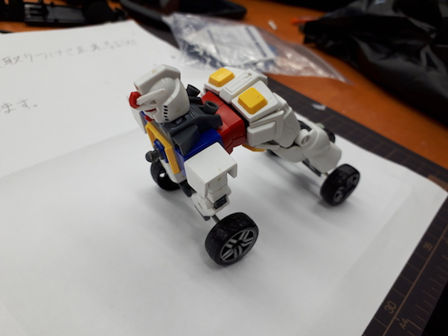
今回作ったもの
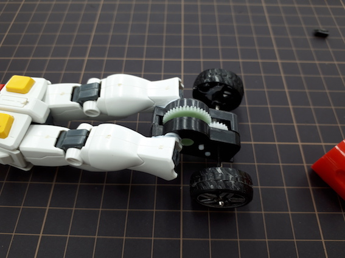
ガンダムの両足首を取って、グールガンで車のおもちゃの後輪タイヤ部分とくっつけた。
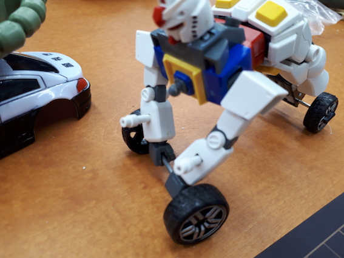
ガンダムの両手に前輪タイヤ部分の金属の細い棒部分を持たせた。
そして最後に、前輪と後輪のタイヤのみが地に着くようにガンダムのポーズを変えた。
感想
今回、いらなくなったガンダムのプラモデルと１００均の車のおもちゃを合わせて
「歩くことのできないガンダム」を作ったが、役に立たないというところまではいかなかった。
「役に立たないもの」を意識的に考えて作るのは案外難しかった。
このようなものを作るために、人型状態から、バイクに変形する仮面ライダー
もしくはトランスフォーマーをモチーフにした。
・ゆるゆるサーキット
二人一組で普通は光らないものを光らせた。
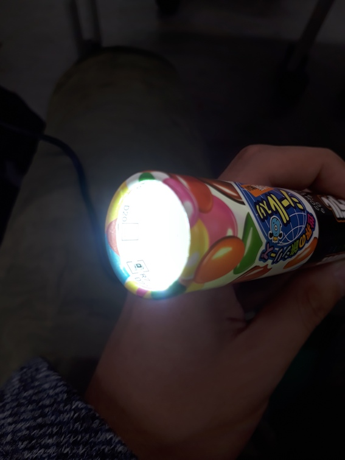
今回光らせたもの
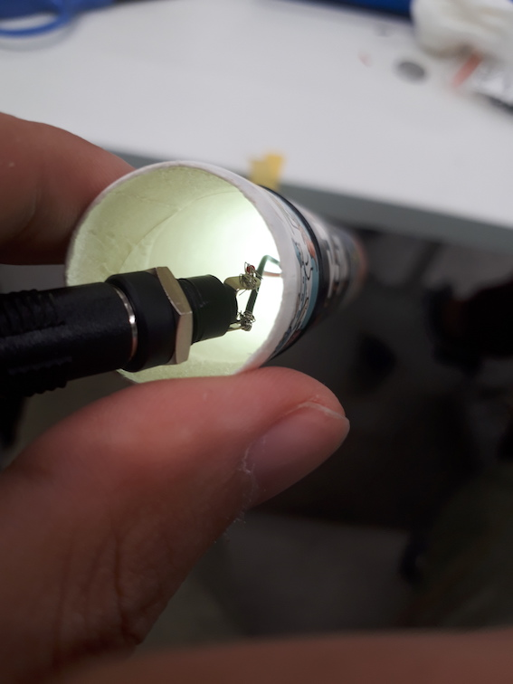
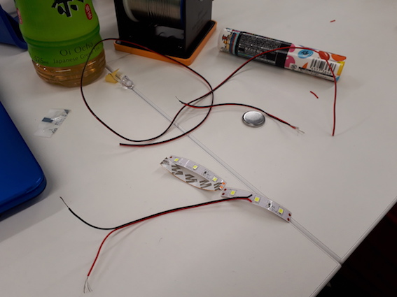
まず、テープLEDと導線をはんだ付けをして、コンセントに繋いで光るか確認した。
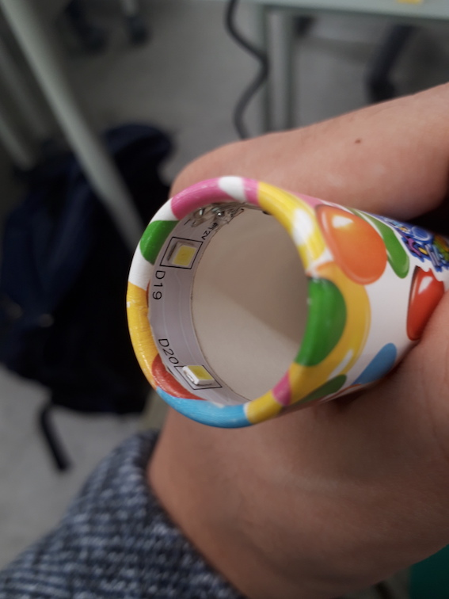
次にペンを光らせたかったが、ペンの構造上、技術面もあり、マーブルチョコの空箱をペンと模し
空箱の底部分のフタを開け、底部分の内側にテープLEDを貼り付けた。
感想
今まで乾電池やボタン電池でしか光らせたことがなかったので、今回テープLEDを初めて使って、
テープという薄い物にも関わらずLEDが光ることに感動した。
はんだ付けはしないといけないが、色々と便利だった。
・アウトプットデバイス/リフレクション
今まで行ってきた全ての課題から１つを選び、その完成品を作る。
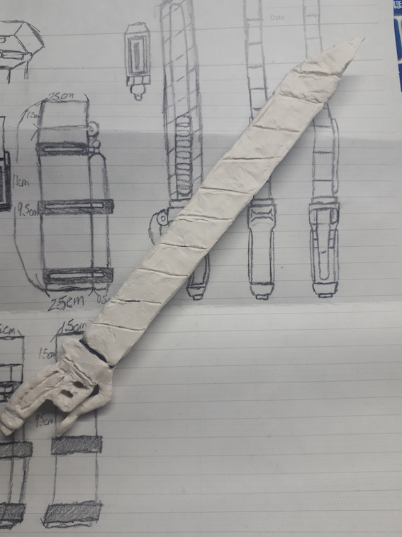
今回作ったもの
今回、私はプロジェクトブックを選び、長尾先生と話して決めたアニメ、漫画、ゲームなどに登場する
アイテムなどをフィジカルなグッズとして考える課題から、漫画「進撃の巨人」に登場する武器を
カッターナイフにデザインしたが、当時は考え、本に描いただけであったので今回を機に石粉粘土
を使い実物にした。
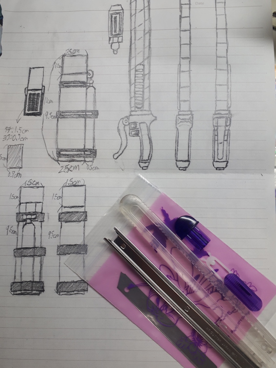画像１
石粉粘土を水を使って柔らかくし、画像１の右下にあるカッターナイフの外装部分におおまかに付けていく。
���（基本的にどの作業でも水を使って形作りやすくする。）
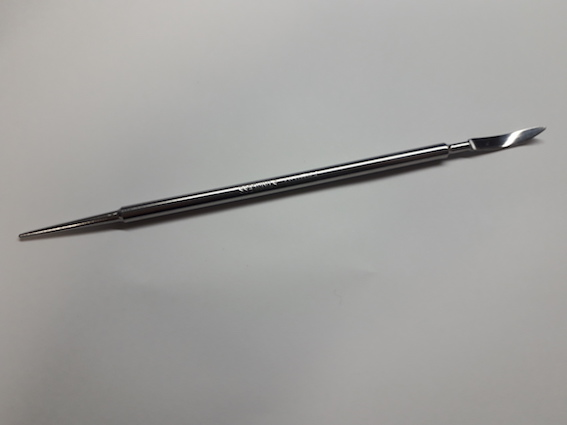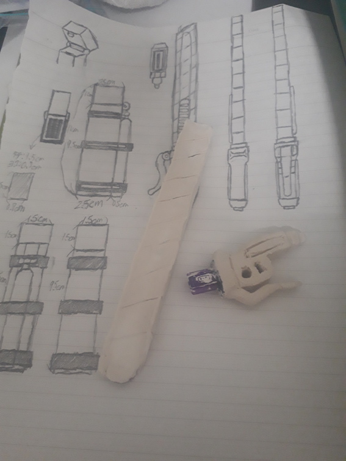
そこから粘土専用のテクスチャツールを使い、デザインした形通りに型取る。
さらに、細かなモールドを彫っていく。
感想
初めて造形物を造って重要だと思ったのがやはり水の加減である。
水の量次第で粘土の柔らかさが決まるので、大切な部分を造形するときは特に注意をしないといけない
ことが分かった。
乾燥した後の造形物のクオリティをさらに上げるためには、ヤスリなども駆使しないといけないことが
分かった。